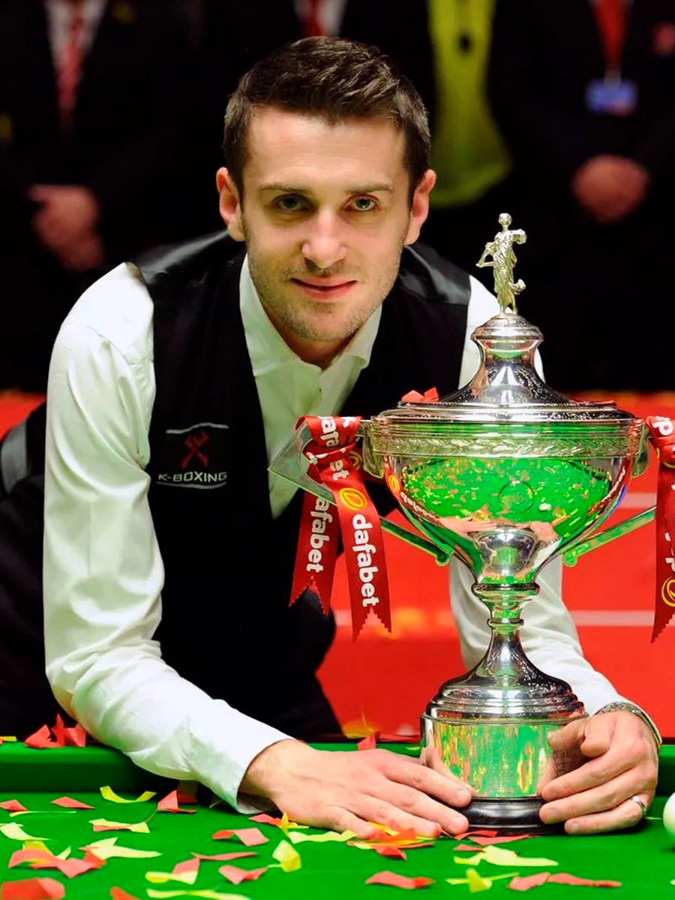
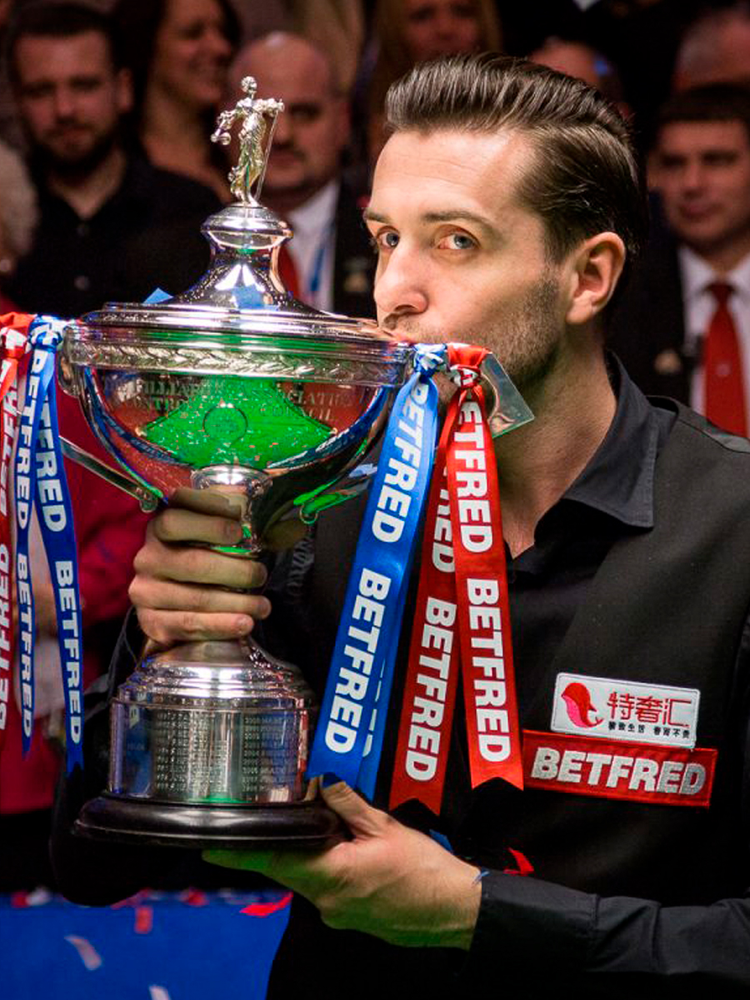

-
1999
turned pro
-
22
ranking titles
-
9
Triple Crown titles
-
797
century breaks
-
5
maximum breaks
-
£7,667,379
career prize money

Early Years
Mark Selby, as the winner of the English Championship Under-15, received a ticket to the main tour in 1999. However, it was not until the 2002 China Open that he first showed his potential, defeating Joe Swale, Stephen Hendry and Ronnie O'Sullivan to reach his first ranking semi-final.
The next year was even better. Selby reached the final of the 2003 Scottish Open, losing to David Gray, and broke into the top 32 players in the world for the first time.
Breakthrough
In 2005, Mark Selby qualified for the World Championship for the first time, but lost 10-5 to John Higgins on his Crucible debut. However, a year later he returned to Sheffield and took revenge against Higgins (then the reigning Masters champion) with a score of 10-4. Then Selby reached the last 16 of the World Championship, losing 13-8 to Mark Williams.
In 2007 he would play John Higgins again in Crucible, but this time in the final. On his way to the final, Mark defeated Stephen Lee, Peter Ebdon, Ali Carter and Sean Murphy. Although he lost 18-13 to Higgins, making a comeback from 12-4 down, Selby entered the top 16 for the first time, finishing at number 11 in the world rankings.


Masters And Ranking Titles
Selby won his first major title at the 2008 Masters at Wembley Arena, beating Stephen Lee 10-3 in the final. A month later, he defeated Ronnie O’Sullivan in the final of the Welsh Open, thereby winning the first ranking tournament in his career.
At the beginning of his career, Mark Selby's performances at the Masters were very successful. Over the next six years after his first Masters victory, he reached four more finals, winning two of them in 2010 and 2013. However, he would have to wait more than three years before he won a ranking tournament again. At the 2011 Shanghai Masters, Selby defeated Mark Williams 10–9 to top the world rankings for the first time.
A year later, Mark Selby won the UK Championship for the first time in York, beating Shaun Murphy 10-6.
World Champion Titles
-
2014
-
2016

-
2017
-
2021

The catalyst for the most successful period of Mark Selby's career was his victory at the 2014 World Championships in Sheffield. He defeated Michael White, Ali Carter, Alan McManus and Neil Robertson. In the final, Mark met defending champion Ronnie O'Sullivan. Trailing 10-5, Selby staged a comeback to win 18-14.
Selby wins his second world title by beating Ding Junhui 18-14 in the final. This makes him the sixth player to win both World Championship and UK Championship in the same year, as well as finishing number one in the world rankings for the fifth season in a row.
In yet another final at the Crucible, Mark Selby faced John Higgins. At first the match was difficult for Selby: he lost to John 2-6 and 7-10. But later he snatched the lead 12-11 and won with a score of 18-15. Thus, Selby was able to defend his world title, maintain his first place in the rankings, and for the first time in snooker history score more than a million rating points. Also that season, Selby won five ranking events, equaling the record of Stephen Hendry and Ding Junhui.
After a long decline in play, Mark Selby reached the final of the World Championship again, showing excellent play throughout the tournament. Selby met with Sean Murphy in the final. Murphy put up decent resistance throughout the match. But he makes a mistake in the last frame. Selby has a difficult position, since to win he needs to pocket all the balls on the table. But Selby copes with the pressure, wins the match 18-15 and becomes a 4-time world champion.
Mark Selby becomes one of the greatest players.
Facts
-
Officer of the Order of the British Empire (2022).
-
Member of the Snooker Hall of Fame (2015).
-
First in snooker history who made maximum break in World Championship final.
-
He has been a fan of the English football club Leicester City since childhood.
-
Fan of the British rock band Kasabian. Mark Selby goes to major tournaments to their songs “Underdog” and “Club Foot”.
-
Selby is nicknamed “The Jester from Leicester” because he loves to laugh and joke.
-
He finished seven seasons in a row as the leader of the world rankings (from 2013 to 2019).
-
Mark Selby is the only world champion in snooker and pool at the same time (2006 World Eight-ball Pool).
-
Traits of his game: seriality, intransigence, exhausting the opponent through tactical play.